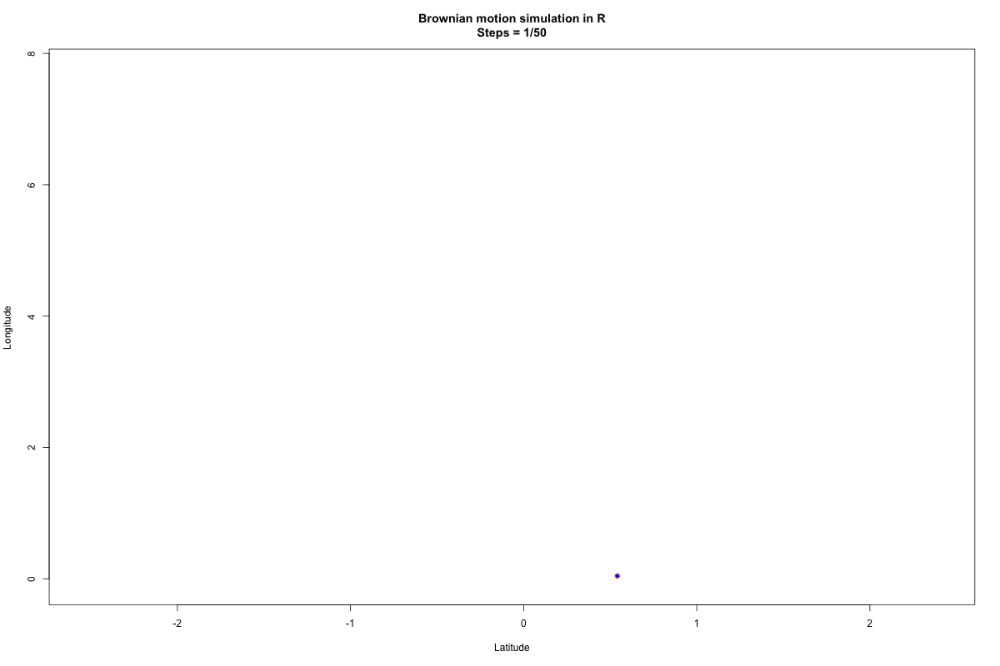

| Day | Time | Location | |
|---|---|---|---|
| Lectures | To be decided | To be decided | Aula centro studi pesca/Teams |
| Final exam | To be decided | To be decided | Aula centro studi pesca/Teams |
Animal-tracking in Biologia della Conservazione
Introduction
Welcome to class! These web-pages contain all the information you need to accomplish your class work for Animal-Tracking nella Biologia della Conservazione (2023-2024).

General information
This is an discretionary course for master level students enrolled in the “Biologia Evoluzionistica, Ecologia e Antropologia Applicata” (BEEA) degree at the University of Rome Tor Vergata. It is worth 2 CFU for a total of 16 hours (i.e., 8 classes of 2 hours each) to be administered in person or remotely using Teams during the second semester of academic year 2023/2024.
Note
As attendance is mandatory I will work with enrolled students to find the best time and day so that all can follow the class in person! If needed, we will change the delivery and we could make the class on-line using the Teams platform.
Course language
The course will be thought in Italian unless international students are present. In this latter case the course will be thought in English. All the material and the literature used (including this website!) will be in English.
Pre-requisites
This is an introductory course, so no prior knowledge of this topic is required. Throughout the course students will be extensively exposed to various software and web-tools. All software used is freely available. It is necessary that each student has his/her own laptop in order to better follow the various demonstrations/exercises presented throughout the course. Problem-solving skills and a good knowledge of your own computer OS structure and function will definitely be useful. This course does not teach you system administration skills and you should know how to read help files and software guides, as well as retrieve information on-line. Should a student not have a portable computer, all code, demonstrations, and class slides will be uploaded to this website and are available for practice on a desktop computer.
Course overview
This course is an introduction to the use of spatial data to track and monitor wildlife. In this course I will assume the student has little to know knowledge of what spatial data is, or how it can be used to analyse the movement patterns of an individual, species and/or population. At the same time, throughout the course we will go over the installation and usage of all the R packages needed to performa analyses and visualize data.
The course is articulated in the following modules. Each module is broken down in various subsection. Note that the list presented here is not to be considered set in stone, as things may change and I may be adding/removing/moving-around sections and other parts of the course.
Textbook and resources
As this is an introductory and discretionary course there is no textbook. All the material covered in class will be available to you on this website. Most of the readings you will be doing is based on peer-reviewed manuscripts published on various scientific journals. Still, if you are really interested in this topic a really good, and advanced book is Guisan, Thuiller, & Zimmermann (2020). As this course will heavily rely on the use of R and R-Studio I am adding here some very useful resources that I encourage to use.
Learning objectives
The course aims to train students in the techniques of acquisition, organization, and analysis of data for the long-term tracking and monitoring of animals for conservation purposes. The course offers an overview of the different types of marking and tracking techniques used to monitor wildlife, and promotes an understanding of the best ways to use them in relation to the specific question that needs answer or hypothesis that needs testing. We will cover some of the most important methodologies used to analyse tracking data (for example, the estimation of distribution ranges) and peak in to some of the more advanced data analysis procedures (for example, animal distribution modeling). Through the review of the scientific literature and the discussion of the different animal monitoring techniques and analytical protocols, the course participants will develop the necessary critical skills for understanding the various problems related to the acquisition and organization of time series of data for animal tracking.
Class evaluation
At the end of the course students will be evaluated on the presentation of a small project that they will undertake throughout the course. We will be reading and discussing primary literature on Movement Ecology. The critical comparison of the various methodologies of data acquisition, organization and processing will constitute the basis for the formulation of the student’s final judgment. Aspects that will be used to assess students’ learning level are their participation and interaction during the course and their ability to present and discuss scientific literature articles.
Meeting hours
Every student is encouraged to contact me by e-mail with questions, doubts, curiosities about this course. My office hours are between 10:00 and 12:00 every Wednesday. My office is number 14, located on the first floor of the main building at “Laboratori di Ecologia Sperimentale ed Acquacoltura” (see the Contact tab for a map with the location of the office). It is always a good idea to e-mail me before coming to the office, to prevent overcrowding.
Students with disabilities
Please, let me know if you require special accommodations to follow this class.
Diversity, Equity, and Inclusion
The success of this class depends on all of us creating a safe environment where students feel comfortable sharing their thoughts and opinions. We should all strive to be respectful and supportive of one another during class discussions. This class is made better by the contribution of diverse perspectives, and I hope that our class conversations can reflect that.
References
Guisan, A., Thuiller, W., & Zimmermann, N. E. (2020). Habitat Suitability and Distribution Models (With Applications in R). Ecology, biodiversity and conservation (p. 462). Cambridge, United Kingdom: Cambridge University Press.